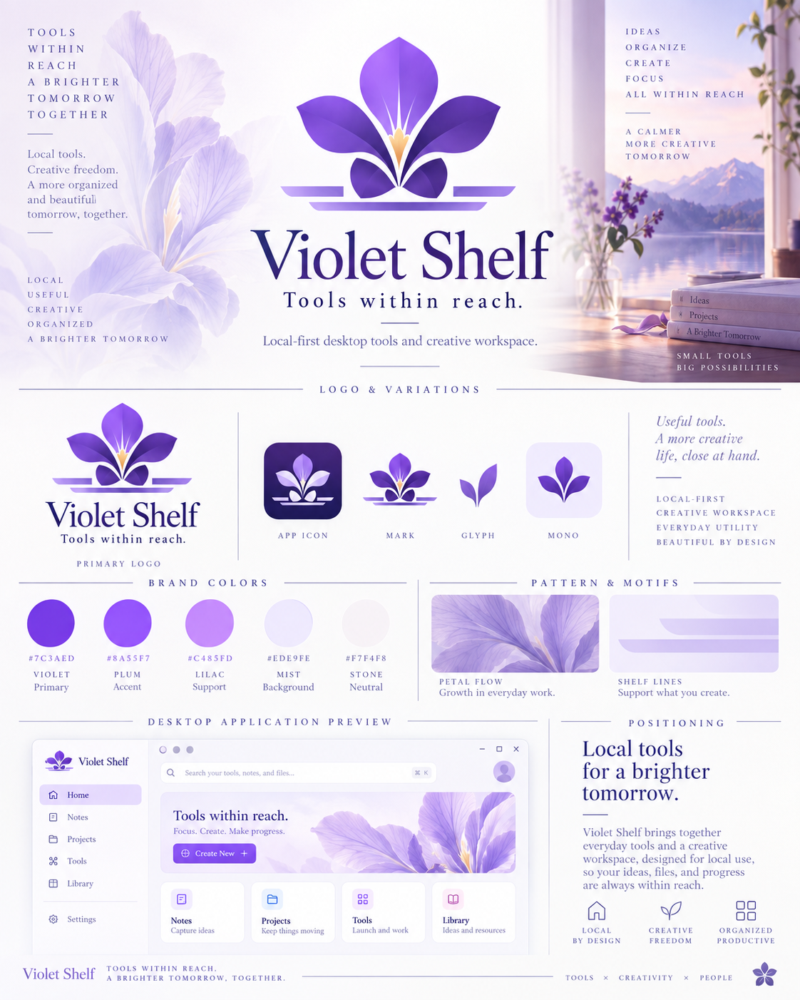

LOCAL DEVELOPMENT AND CREATIVE TOOLS
Violet Shelf
本地 macOS candidate，使用 Electron 44、React/TypeScript 与 Rust helper；不提供公开发布或下载。
已验证的本地工具
- Card Studio：创建或导入版本化卡牌文档，绑定精确的 Asset Relations 图片，比较普通／升级面，并显式导出 JSON 或 PNG。
- Asset Relations：选择一个资源目录，为内容条目关联图片、音频或文档，预览并维护明确的当前版本，而不移动或改写原文件。
- Table Relations：只读导入用户选定的 JSON／CSV，声明正反向关系，并给出可定位的缺失、歧义与循环诊断。
- Deck Odds（已启用的 Workbench module）：计算一类或两类互斥卡组的精确无放回抽取概率，比较情景、保存实验并按原 Generation 重跑。
- Motion Curve Lab：预览、暂停、重置并拖动矩形或精确资源图片的有界位置、缩放、透明度与命名曲线；可显式导出 JSON。
- Localization Checker：比较用户选定的 JSON 映射或 key／locale／text CSV，按明确占位符语法报告缺失、空值、重复与不支持语法，并导出 JSON 报告。
工具操作仅在本地进行。查看 当前项目与证据状态 和 IrisSakura 品牌参考。仓库本地 README 与 docs/product/iris-shelf-new-tools-r1-delivery.md 是受版本控制的源码资料，不是公开链接、发布或下载。
